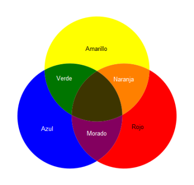

Aprendiendo los colores
Los colores se dividen en 3 clases:
Los primarios: amarillo, azul y rojo.
Los secundarios: el verde, naranja y violeta.
Los terciarios: que se originan de la mezcla entre un color primario + un color secundario.

rojo